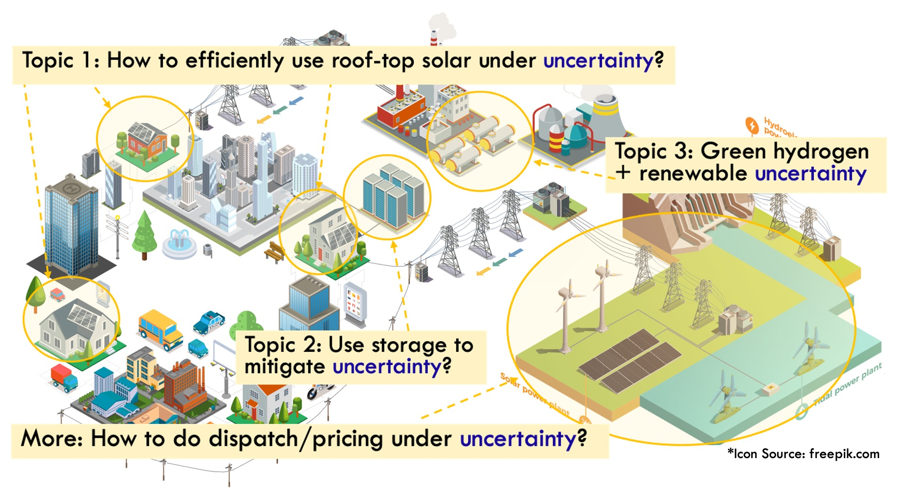
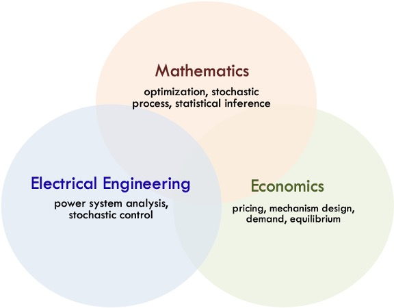

I am an assistant professor from the Thayer School of Engineering at Dartmouth College (Contact: Cong.Chen@dartmouth.edu). I received my Ph.D. degree supervised by Prof.Lang Tong in the Dept. of Electrical and Computer Engineering (ECE) at Cornell University. I was a Stanford Energy Postdoctoral Fellow at the Stanford Graduate School of Business, working with professors Kuang Xu , Omer Karaduman , and Itai Ashlagi.

My research focuses on advancing the global energy transition through optimization, economics, and modern machine learning/AI principles. I have research experience in large-scale distributed energy resource aggregation, pricing under uncertainties, energy storage integration in the electricity market, large language models for energy consumers, and hydrogen storage for grid resilience.

Broadly speaking, my research interests lie in the intersection of power system engineering, optimization theory, power system economics, and electricity markets.
My hobbies are hiking, photography, playing the piano, rock climbing, and snowboarding.
Cong Chen earned her Ph.D. in Electrical Engineering from the Department of Electrical and Computer Engineering (ECE) at Cornell University, with a major in Electrical Engineering and minors in Operations Research and Data Science. She was a Ph.D. summer intern at ISO New England in 2021. Prior to her Ph.D., she received her B.E. degree from Wuhan University and her M.S. degree from Tsinghua University, both in Electrical Engineering.
She feels deeply honored to have her work recognized and is sincerely grateful to all the mentors, collaborators, and peers who have supported her along the way. Her recognitions include the Cornell ECE Outstanding Ph.D. Thesis Award (2024), the Engineering and Applied Science Trailblazing Young Researcher at Caltech (2023), the Stanford Energy Postdoctoral Fellowship (2024), Best Paper Awards at the IEEE Power & Energy Society General Meeting (PESGM, 2019, 2024, 2025), the Prize Conference Paper Award at IEEE PESGM (2023), the Amazon Research Award (2025), the Best Presentation Award at the Ph.D. Dissertation Challenge during the IEEE PES Grid Edge Technologies Conference & Exposition (2025), and the IEEE PES Outstanding Doctoral Dissertation Award (2025).
Feb 2026: I am co-chairing the 'GridFM and AI for Power Markets' session at the 5th Workshop on Foundation Models of the Electric Grid , March 17–19, 2026, at Harvard University. We warmly welcome you to join us!
Jan 2026: Together with my visiting PhD student Jingguan Liu, we developed an interesting aggregation method for distributed residential batteries, supported by the law of large numbers for random sets. More details can be found in our arXiv paper: Mean-Field Learning for Storage Aggregation. This work will be presented at the 5th Workshop on Foundation Models of the Electric Grid, March 17–19, 2026, at Harvard University.
Dec 2025: I am honored to receive the Amazon Research Award, which is a great encouragement for me to continue my research on AI agents for energy customers. You can find more details in the paper below, and I welcome your feedback:
Cong Chen, Omer Karaduman, and Xu Kuang, “Behavioral Generative Agents for Energy Operations.”
Jan 2025: Happy New Year! I hope 2024 is treating you well and that 2025 will be even more rewarding. I’m also excited to share that I received the Best Presentation Award at the “3-Minute Ph.D. Dissertation Challenge” during the 2025 IEEE PES Grid Edge Technologies Conference and Exposition.
Mar 2024: It’s my great honor to receive Cornell ECE Outstanding Ph.D. Thesis Award, a profound encouragement for me to continue my exciting and challenging research journey.
Feb 2024: Happy Lantern Festival！ I'm so excited to have the opportunity to present my research to the Thayer School of Engineering at Dartmouth on March 27th!
Feb 2024: Happy Lunar New Year! Our new results for battery and hydrogen storage are accepted by 2024 IEEE Power & Energy Society General Meeting (PESGM), and I'm looking forward to your comments:
Siying Li, Cong Chen, and Lang Tong, “Convexifying Regulation Market Clearing of State-of-Charge Dependent Bid". The journal version is under review by IEEE Transactions on Power Systems.
Shreshtha Dhankar, Cong Chen, and Lang Tong, “Enhancing Microgrid Resilience with Green Hydrogen Storage".
Jan 2024: I'm so excited to have the opportunity to present my research to the Dept. of Electrical Engineering and Computer Science at the University of California, Berkeley on Feb. 21st!
Jan 2024: Happy New Year! I'm so excited to have the opportunity to present my research to the Dept. of Electrical and Computer Engineering at the University of Washington on Feb. 8th!
Dec 2023: I'm going to present a poster about Distributed Energy Resources Aggregator (DERA) at Power Systems Engineering Research Center Industry Advisory Board Meeting ( PSERC IAB meeting ) at Georgia Institute of Technology.
Thanksgiving 2023: Thank you very much for the support from my advisor, collaborators, and mentors in academia and industry. I would like to share our new results in State-of-Charge (SoC) dependent bid and hydrogen storage, and I'm looking forward to your comments:
S. Li, C. Chen, and L. Tong, “Convexifying Regulation Market Clearing of State-of-Charge Dependent Bid"
S. Dhankar, C. Chen, and L. Tong, “Enhancing Microgrid Resilience with Green Hydrogen Storage"
Nov 2023: It's my great pleasure to be selected for the 2023 EAS Trailblazers Symposium in the Division of Engineering and Applied Science (EAS) at Caltech.
Sept 2023: Our paper about DERA (Part I, Part II) is accepted to be presented at the 6th Workshop on Autonomous Energy Systems at NREL.
Aug 2023: I received the 2023 IEEE Power & Energy Society Prize Conference Paper Award for our paper about distributed energy resources aggregation (DERA).
Jul 2023: Here are our new results in DERA, and I'm looking forward to your comments:
Part I: Cong Chen, Subhonmesh Bose, Tim Mount, and Lang Tong, “Wholesale Market Participation of DERA Part I: DSO-DERA-ISO Coordination” [link]
Part II: Cong Chen, Ahmend Alahmed, Tim Mount, and Lang Tong, “Wholesale Market Participation of DERA Part II: Competitive DER Aggregation” [link]
May 2023: Our paper, DSO-DERA Coordination for the Wholesale Market Participation of Distributed Energy Resources [link], has been selected as one of the Best Conference Papers submitted to the 2023 IEEE PES General Meeting.